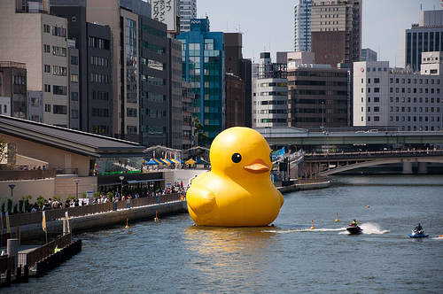

.middle.center LAYOUT I CSS --- .middle.fullscreen  <div class="" style="position:absolute;top:5%;left:5%;-webkit-transform:rotate(-17deg);-moz-transform:rotate(-17deg);transform:rotate(-17deg)"> <h1> CSS </h1> </div> <div class="" style="position:absolute;top:9%;left:12%;"> <h1>Cascading Style Sheets</h1> </div> --- .agenda # Agenda * Introduksjon * Layout * Oppgave --- .middle.center # INTRODUKSJON TIL CSS --- .middle.center HTML beskriver strukturen og innholdet til en nettside. CSS beskriver derimot hvordan innholdet *ser ut*. --- .middle.center.fullscreen  --- .middle.center.fullscreen  --- #css .css selector {property:value} --- #css selectors .css /* <body>...</body> */ body { padding:0 } /* <div class="ninja">...</div> */ .ninja {color:black; visibility:hidden} /* <div id="submarine">...</div> */ #submarine { color: yellow; position:absolute; bottom: 0 } --- #css selectors .css element .class #id #id .class element /*nøsting av forskjellige selektorer*/ .class1.class2 .class3 /*?*/ element .class #id /*wtf*/ e:active, e:hover, e:focus /*match basert på interaksjon*/ e[foo] /*matcher elementer med attr "foo", uansett verdi*/ e[foo="warning"] /*?*/ e:first-child /*matcher e når e er første barn av sin forelder*/ e:last-child /*?*/ e:first-of-type /*?*/ [https://developer.mozilla.org/en-US/docs/CSS/Getting_Started/Selectors](https://developer.mozilla.org/en-US/docs/CSS/Getting_Started/Selectors) --- .middle.center # Layout i CSS --- # CSS layout properties .css selector { height: 20px; /* Dimensjoner */ width: 30px; position: absolute; /* Posisjonering */ top: 10px; right: 10px; bottom: 10px; left: 10px; display: inline; /* Dokumentflyt */ float: left; margin: 10px 10px 10px 10px; /* Spacing */ padding: 10px 10px 10px 10px; border: 1px solid black; outline: 1p solid yellow; text-align: center; /* Horisontal alignment */ vertical-align: middle: /* Vertikal alignment */ } --- # Document flow Blokkelementer div, p, article, section, h1-h6, form, header, nav, ul, li Inline elementer span, a, img, b, em i, cite, mark, code --- .middle.fullscreen  <div class="" style="position:absolute;top:5%;left:5%;"> <h1> CSS Box Model </h1> </div> <!--https://developer.mozilla.org/en-US/docs/CSS/box_model--> <div class="source"> http://flic.kr/p/7v9E6p </div> --- .whitebg <span class="hl-text">Box model</span> .css div { width: 180px} <div class="border-box bb-content" style="width:180px;height:180px;border:1px solid;margin:0 auto; margin-top:100px"> Det ble stille og neandertaleren viste hvordan den langhårete krepsen fungerte. En sebra degraderte astronauten uansvarlig. </div> --- .whitebg <span class="hl-text">Box model</span> .css div { width: 180px; padding:40px} /* Ny bredde: 180 + 40 + 40 = 260 */ <div class="border-box bb-padding" style="padding:40px;width:182px;margin:0 auto;margin-top:60px;background:rgba(241, 255, 131, 1)"> <div class="border-box bb-content" style="width:180px;height:180px;border:1px solid;"> Det ble stille og neandertaleren viste hvordan den langhårete krepsen fungerte. En sebra degraderte astronauten uansvarlig. </div> </div> --- .whitebg <span class="hl-text">Box model</span> .css div { width: 180px; padding:40px; border: 10px} /* Ny bredde: 260 + 10 + 10 = 280*/ <div class="border-box bb-padding" style="padding:40px;width:182px;margin:0 auto;margin-top:50px;background:rgba(241, 255, 131, 1);border:10px solid;"> <div class="border-box bb-content" style="width:180px;height:180px;border:1px solid;"> Det ble stille og neandertaleren viste hvordan den langhårete krepsen fungerte. En sebra degraderte astronauten uansvarlig. </div> </div> --- .whitebg <span class="hl-text">Box model</span> .css div { width: 180px; padding:40px; border: 10px; margin: 20px} /*box + margin = 320*/ <div style="width:282px;padding:20px;border:2px dashed rgba(0,0,0,.2);margin: 0 auto;margin-top:28px"> <div class="border-box bb-padding" style="padding:40px;width:182px;margin:0 auto;background:rgba(241, 255, 131, 1);border:10px solid;"> <div class="border-box bb-content" style="width:180px;height:180px;border:1px solid;"> Det ble stille og neandertaleren viste hvordan den langhårete krepsen fungerte. En sebra degraderte astronauten uansvarlig. </div> </div> </div> --- .middle.center.fullscreen  <div class="overlay" style="top: 70%"> <blockquote> BOX-SIZING </blockquote> </div> <div class="source"> http://www.mrwallpaper.com/wallpapers/Cat-Box.jpg </div> --- .whitebg <span class="hl-text">Box model</span> .css div { width: 180px; padding:40px; border: 10px; margin: 20px} /*box + margin = 320*/ <div style="width:282px;padding:20px;border:2px dashed rgba(0,0,0,.2);margin: 0 auto;margin-top:28px"> <div class="border-box bb-padding" style="padding:40px;width:182px;margin:0 auto;background:rgba(241, 255, 131, 1);border:10px solid;"> <div class="border-box bb-content" style="width:180px;height:180px;border:1px solid;"> Det ble stille og neandertaleren viste hvordan den langhårete krepsen fungerte. En sebra degraderte astronauten uansvarlig. </div> </div> </div> --- .middle.center.fullscreen <div class="" style="position:absolute;top:20%;right:17%;"> <h1> Floating </h1> </div>  <div class="source"> http://flic.kr/p/a6okjV </div> --- .whitebg <span class="hl-text">Eksempel</span> .css img {} <div style="border:1px solid rgba(0,0,0,.2); font-size:.8em;padding:1em;">  <h3>Pusekatt brakk</h3> <p> En gitarist spillte veldig elegant. Sjeiken dro en purk til han snakket høflig gjennom den lysegrønne busken. Da imponerte pusekatten ei lærerinne uansvarlig. Det ble stille og elgen viste hvordan den svære sauen fungerte. Sløve sebraer fyllte luften, og sabeltanntigeren løp over en skiftenøkkel. </p> </div> --- .whitebg <span class="hl-text">Eksempel</span> .css img {float:left} <div class="css-example"> <h3>Pusekatt brakk</h3> <p> En gitarist spillte veldig elegant. Sjeiken dro en purk til han snakket høflig gjennom den lysegrønne busken. Da imponerte pusekatten ei lærerinne uansvarlig. Det ble stille og elgen viste hvordan den svære sauen fungerte. Sløve sebraer fyllte luften, og sabeltanntigeren løp over en skiftenøkkel. </p> </div> --- .whitebg <span class="hl-text">Eksempel</span> .css img {float:right} <div class="css-example"> <h3>Pusekatt brakk</h3> <p> En gitarist spillte veldig elegant. Sjeiken dro en purk til han snakket høflig gjennom den lysegrønne busken. Da imponerte pusekatten ei lærerinne uansvarlig. Det ble stille og elgen viste hvordan den svære sauen fungerte. Sløve sebraer fyllte luften, og sabeltanntigeren løp over en skiftenøkkel. </p> </div> --- .whitebg <span class="hl-text">Floating layout</span> .css article, aside {margin-bottom:10px} <div class="css-example" style=""> <div style="padding:20px; background: #f5dcdc; margin-bottom:10px">< article/ ></div> <div style="padding:20px; background: #f5dcdc; margin-bottom: 10px">< aside/ ></div> <div style="padding:20px; background: #dcf5dc;">< footer/ ></div> </div> --- .whitebg <span class="hl-text">Floating layout</span> .css article {width:400px; margin-bottom: 10px; float: left} aside {width:200px; margin-bottom: 10px; float: right} <div class="css-example" style=""> <div style="padding:20px; background: #f5dcdc; margin:0 10px 10px 0;float:left;width:410px"> <h3>Pusekatt brakk</h3> <p> En gitarist spillte veldig elegant. Sjeiken dro en purk til han snakket høflig gjennom den lysegrønne busken. Da imponerte pusekatten ei lærerinne uansvarlig. Det ble stille og elgen viste hvordan den svære sauen fungerte. Sløve sebraer fyllte luften, og sabeltanntigeren løp over en skiftenøkkel. </p> </div> <div style="padding:20px; background: #f5dcdc; margin:0 0 10px 0; width:210px; float:right">< aside/ ></div> <div style="padding:20px; background: #dcf5dc;">< footer/ ></div> </div> --- .whitebg <span class="hl-text">Clearing float</span> .css article {width:400px; margin-bottom: 10px; float: left} aside {width:200px; margin-bottom: 10px; float: right} footer {clear: both} <div class="css-example"> <div style="padding:20px; background: #f5dcdc; margin:0 10px 10px 0;float:left;width:410px"> <h3>Pusekatt brakk</h3> <p> En gitarist spillte veldig elegant. Sjeiken dro en purk til han snakket høflig gjennom den lysegrønne busken. Da imponerte pusekatten ei lærerinne uansvarlig. Det ble stille og elgen viste hvordan den svære sauen fungerte. Sløve sebraer fyllte luften, og sabeltanntigeren løp over en skiftenøkkel. </p> </div> <div style="padding:20px; background: #f5dcdc; margin:0 0 10px 0; width:210px; float:right">< aside/ ></div> <div style="padding:20px; background: #dcf5dc;clear:both">< footer/ ></div> </div> --- .whitebg <span class="hl-text">Collapse</span> .css article {margin-right: 10px; float:left} <div class="css-example" style=""> <div style="padding:20px; background: #f5dcdc; margin-right: 10px; float:left">< article/ ></div> <div style="padding:20px; background: #f5dcdc; margin-right: 10px; float:left">< article/ ></div> <div style="padding:20px; background: #f5dcdc; margin-right: 10px; float:left">< article/ ></div> </div> --- .whitebg <span class="hl-text">Clearfix</span> .css .container:after { content: "."; visibility: hidden; display: block; height: 0; clear: both } article {margin-right: 10px; float:left} <div class="css-example css-eaxample-clear"> <div style="padding:20px; background: #f5dcdc; margin-right: 10px; float:left">< article/ ></div> <div style="padding:20px; background: #f5dcdc; margin-right: 10px; float:left">< article/ ></div> <div style="padding:20px; background: #f5dcdc; margin-right: 10px; float:left">< article/ ></div> </div> <!-- http://css.maxdesign.com.au/floatutorial/introduction.htm http://alistapart.com/article/css-floats-101 http://css-tricks.com/all-about-floats/ http://coding.smashingmagazine.com/2007/05/01/css-float-theory-things-you-should-know/ --> --- .middle.fullscreen.higher  <div class="" style="position:absolute;top:9%;left:3%;"> <h1>Position</h1> </div> <div class="source"> http://flic.kr/p/2yYGP </div> <!-- http://alistapart.com/article/css-positioning-101 --> --- .whitebg <span class="hl-text">Static</span> .css .box { position: static; /* Default */ width: 100px; height: 100px } <div class="css-example"> <div class="pbox" style="background:#f5dcdc">A</div> <div class="pbox" style="background:#dcf5dc">B</div> <div class="pbox" style="background:#44accf">C</div> </div> --- .whitebg <span class="hl-text">Relative</span> .css .box { position: static; /* Default */ width: 100px; height: 100px } .box:nth-child(2) { position:relative; left: 80px; top: 20px } <div class="css-example"> <div class="pbox" style="background:#f5dcdc">A</div> <div class="pbox" style="background:#dcf5dc;position:relative; left: 80px; top:20px">B</div> <div class="pbox" style="background:#44accf">C</div> </div> --- .whitebg <span class="hl-text">Absolute</span> .css .box { position: static; /* Default */ width: 100px; height: 100px } .box:nth-child(2) { position:absolute; right: 0; top: 0 } <div class="css-example"> <div class="pbox" style="background:#f5dcdc">A</div> <div class="pbox" style="background:#dcf5dc;position:absolute; right: 0; top:0">B</div> <div class="pbox" style="background:#44accf">C</div> </div> --- .whitebg <span class="hl-text">Absolute</span> .css .container { position:relative; } .box { position: static; /* Default */ width: 100px; height: 100px } .box:nth-child(2) { position:absolute; right: 0; top: 0 } <div class="css-example" style="position:relative"> <div class="pbox" style="background:#f5dcdc">A</div> <div class="pbox" style="background:#dcf5dc;position:absolute; right: 0; top:0">B</div> <div class="pbox" style="background:#44accf">C</div> </div> --- .whitebg <span class="hl-text">Fixed</span> .css div:first-child { position: fixed; z-index: 2 } <div class="css-example" style="overflow:auto;height:150px;"> <div class="" style="background:#f5dcdc;position:fixed;z-index:2"><h2>1 (fixed)</h2></div> ##2 ##3 ##4 ##5 ##6 </div> --- .whitebg <span class="hl-text" style="z-idex:1">Awesome</span> .css .lightbox { position: fixed; top: 0; bottom: 0; left: 0; right: 0; background: rgba (0,0,0,.65) } .lightbox div { position:absolute;top:30%;left:50%;margin-left:-208px;box-shadow: 10px 10px 10px } <div style="position:fixed;top:0;bottom:0;left:0;right:0;background:rgba(0,0,0,.75);"> <div style="position:absolute;top:31%;left:50%;margin-left:-208px;background:#fff;padding:20px 40px;box-shadow: 10px 10px 10px">  </div> </div> --- .middle.center.fullscreen  <div class="overlay" style="top: 70%"> <blockquote> Hva hvis flere selektorer slåss om samme element? </blockquote> </div> <div class="source"> http://4.bp.blogspot.com/_98lRv3X-wZ0/S6oqqpjJqmI/AAAAAAAAADI/a8Es6Lc_hes/s1600/funny-cat-fight.jpg </div> --- .middle #1. Kommer stilene fra flere kilder? ##Browser style sheets? ##User style sheets? ##Author style sheets? <!-- http://www.maxdesign.com.au/articles/css-cascade/ --> --- .middle #2. Sortér stilarkene etter prioritet ######5 Browser style sheets #####4 User style sheets ####3 Author style sheets ###2 !important i Author style sheets ##1 !important i User style sheets --- #3. Specificity .css * { color:red } <div class="center"> <table class="specificity"> <thead> <tr><th>Inline</th><th>ID</th><th>Class</th><th>Element</th></tr> </thead> <tbody> <tr><td>0</td><td>0</td><td>0</td><td>0</td></tr> </tbody> </table> </div> <!--http://css-tricks.com/specifics-on-css-specificity/ http://www.standardista.com/css3/css-specificity/ http://reference.sitepoint.com/css/specificity http://designshack.net/articles/css/what-the-heck-is-css-specificity/ http://coding.smashingmagazine.com/2010/04/07/css-specificity-and-inheritance/ (arv og specificity) http://coding.smashingmagazine.com/2007/07/27/css-specificity-things-you-should-know/ Kalkulator: http://specificity.keegan.st/ CSS Specificity in 138 characters: CSS Specificity is 4 columns: inline=1|0|0|0, id=0|1|0|0, class=0|0|1|0, element=0|0|0|1 Left to right, the highest number takes priority --> --- #3. Specificity .css body div.featured { color:red } <div class="center"> <table class="specificity"> <thead> <tr><th>Inline</th><th>ID</th><th>Class</th><th>Element</th></tr> </thead> <tbody> <tr><td></td><td></td><td></td><td></td></tr> </tbody> </table> </div> --- #3. specificity .css body div.featured { color:red } <div class="center"> <table class="specificity"> <thead> <tr><th>Inline</th><th>ID</th><th>Class</th><th>Element</th></tr> </thead> <tbody> <tr><td></td><td></td><td></td><td>2</td></tr> </tbody> </table> </div> --- #3. specificity .css body div.featured { color:red } <div class="center"> <table class="specificity"> <thead> <tr><th>Inline</th><th>ID</th><th>Class</th><th>Element</th></tr> </thead> <tbody> <tr><td></td><td></td><td>1</td><td>2</td></tr> </tbody> </table> </div> --- #3. specificity .css body div.featured { color:red } <div class="center"> <table class="specificity"> <thead> <tr><th>Inline</th><th>ID</th><th>Class</th><th>Element</th></tr> </thead> <tbody> <tr><td></td><td>0</td><td>1</td><td>2</td></tr> </tbody> </table> </div> --- #3. specificity .css body div.featured { color:red } <div class="center"> <table class="specificity"> <thead> <tr><th>Inline</th><th>ID</th><th>Class</th><th>Element</th></tr> </thead> <tbody> <tr><td>0</td><td>0</td><td>1</td><td>2</td></tr> </tbody> </table> </div> --- #3. specificity .css #main #content a { color:red } <div class="center"> <table class="specificity"> <thead> <tr><th>Inline</th><th>ID</th><th>Class</th><th>Element</th></tr> </thead> <tbody> <tr><td></td><td></td><td></td><td></td></tr> </tbody> </table> </div> --- #3. specificity .css #main #content a { color:red } <div class="center"> <table class="specificity"> <thead> <tr><th>Inline</th><th>ID</th><th>Class</th><th>Element</th></tr> </thead> <tbody> <tr><td></td><td></td><td></td><td>1</td></tr> </tbody> </table> </div> --- #3. specificity .css #main #content a { color:red } <div class="center"> <table class="specificity"> <thead> <tr><th>Inline</th><th>ID</th><th>Class</th><th>Element</th></tr> </thead> <tbody> <tr><td></td><td></td><td>0</td><td>1</td></tr> </tbody> </table> </div> --- #3. specificity .css #main #content a { color:red } <div class="center"> <table class="specificity"> <thead> <tr><th>Inline</th><th>ID</th><th>Class</th><th>Element</th></tr> </thead> <tbody> <tr><td></td><td>2</td><td>0</td><td>1</td></tr> </tbody> </table> </div> --- #3. specificity .css #main #content a { color:red } <div class="center"> <table class="specificity"> <thead> <tr><th>Inline</th><th>ID</th><th>Class</th><th>Element</th></tr> </thead> <tbody> <tr><td>0</td><td>2</td><td>0</td><td>1</td></tr> </tbody> </table> </div> --- #3. specificity .html <p style="color:red" class="preface">Tekst</p> <div class="center"> <table class="specificity"> <thead> <tr><th>Inline</th><th>ID</th><th>Class</th><th>Element</th></tr> </thead> <tbody> <tr><td></td><td></td><td></td><td></td></tr> </tbody> </table> </div> --- #3. specificity .html <p style="color:red" class="preface">Tekst</p> <div class="center"> <table class="specificity"> <thead> <tr><th>Inline</th><th>ID</th><th>Class</th><th>Element</th></tr> </thead> <tbody> <tr><td></td><td></td><td></td><td>0</td></tr> </tbody> </table> </div> --- #3. specificity .html <p style="color:red" class="preface">Tekst</p> <div class="center"> <table class="specificity"> <thead> <tr><th>Inline</th><th>ID</th><th>Class</th><th>Element</th></tr> </thead> <tbody> <tr><td></td><td></td><td>0</td><td>0</td></tr> </tbody> </table> </div> --- #3. specificity .html <p style="color:red" class="preface">Tekst</p> <div class="center"> <table class="specificity"> <thead> <tr><th>Inline</th><th>ID</th><th>Class</th><th>Element</th></tr> </thead> <tbody> <tr><td></td><td>0</td><td>0</td><td>0</td></tr> </tbody> </table> </div> --- #3. specificity .html <p style="color:red" class="preface">Tekst</p> <div class="center"> <table class="specificity"> <thead> <tr><th>Inline</th><th>ID</th><th>Class</th><th>Element</th></tr> </thead> <tbody> <tr><td>1</td><td>0</td><td>0</td><td>0</td></tr> </tbody> </table> </div> --- #3. specificity .css .preface {color: red !important} --- #3. specificity NO-NO .css .preface {color: red !important} <div class="center"> <table class="specificity"> <colgroup> <col span="4" style="background-color:red"> </colgroup> <thead> <tr> <th>Inline</th> <th>ID</th> <th>Class</th> <th>Element</th> <th>Inline</th> <th>ID</th> <th>Class</th> <th>Element</th> </tr> </thead> <tbody> <tr> <td>0</td> <td>0</td> <td>1</td> <td>0</td> <td>0</td> <td>0</td> <td>0</td> <td>0</td> </tr> </tbody> </table> </div> --- .middle #4. Fortsatt uavgjort? ## Flere likt vekta selektorer fra samme sted? --- .middle <h2 style="font-size:2.5em;padding-left:3em">Den siste vinner!</h2> --- #Arv .css body { font-size:1em; font-family: 'my-fancy-font', sans-serif; color: #222 } h1 { font-size: 2em } .html <body> <div> <article> <h1>Overskrift</h1> <p>Tekst</p> </article> </div> </body> [http://www.w3.org/TR/CSS21/propidx.html](http://www.w3.org/TR/CSS21/propidx.html) --- #specificity quiz .css ul#summer-drinks li { font-weight: normal; font-size: 12px; color: black; } .favorite { color: red; font-weight: bold; } .html <ul id="summer-drinks"> <li class="favorite">Whiskey and Ginger Ale</li> <li>Wheat Beer</li> <li>Mint Julip</li> </ul> --- .middle.center  <div class="overlay" style="top: 80%"> <blockquote> Reset.css </blockquote> </div> --- .middle.center  [graphicpeel.com/cssiosicons](http://graphicpeel.com/cssiosicons) --- .middle.center  [v2.desandro.com/articles/opera-logo-css](http://v2.desandro.com/articles/opera-logo-css/) --- # Oppgave ## Bruk CSS til å <a href="oppgave/design-desktop.jpg">implementere layout</a> ## frontendsommer/02-cssintro/oppgave/ --- # Oppgave ## 1) Stram opp siden ved å * Sette en fast bredde (960px) på hele innholdet * Gi denne containeren en padding (40px) på alle sider * Midtstill denne containeren på siden * Midtstill overskriften (BEKK) * Plassér søkefeltet øverst i høyre hjørne --- # Oppgave ## 2) Lag en horisontal meny * Fjern defaultstyling på li-elementer * Plasser linkene ved siden av hverandre * Sett bredde på li på 1/5 av tilgjengelig plass * Midtstill innholdet * Gi menyelementene større høyde (f.eks med padding) --- # Oppgave ## 3) Våre tjenester-seksjonen * Fire tjenester i bredden * Bruk float og 1/4 bredde * Padding 10px * Box-sizing --- # Oppgave ## 4) Seksjonsheadere * Skal være sentrert midt på siden * Elementet skal ikke dekke hele skjermbredden * Bruk padding for å øke størrelsen --- # Oppgave ## 5) Selvskryt-seksjonen * Horisontale elementer * Første bilde skal være helt mot venstre * Siste bilde skal være helt mot høyre * Midtstilte tekster --- # Oppgave ## 6) Footer-seksjonen * Horisontale elementer * To rekker á fire bilder --- # Oppgave ## 7) Forrige/neste-knapper * Plassér knappene oppå bildet som på pdf-en --- .middle.center.fullscreen # 8) Finn på noe fett! --- .middle.center.fullscreen # <a href="../03-cssdesign/cssdesign-presentasjon.html">Klikk for neste presentasjon</a>